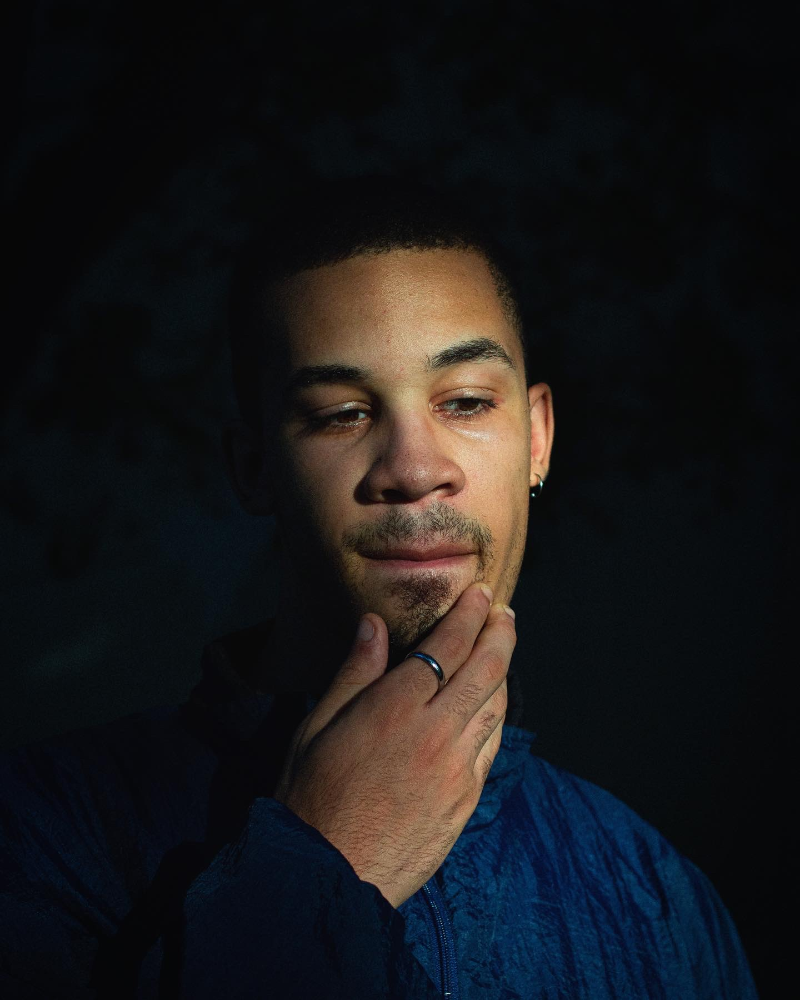

DROPDEADDOM -- BASH -- 06X18
ARCHIVE :: [ABOUT]
>
[RETURN]
dbloo010@fiu.edu
 Dominic Bloomfield is a 21 y/o creative from Mandeville, Jamaica raised in Broward/Dade County, Florida. His drawings, while abstract, serve to illustrate realms outside of ours; some riddled with elegance and some riddled with chaos. As a result, Dominic has designed album covers for a few Florida underground artists including Gryan, Styx Rivver, KenDog, Sixerd and most of OnyxDaBerry's discography. Dominic is also a self-taught video editor and videographer, similarly contributing to OnyxDaBerry's "HANDS ON ME" and "1ST OF NOVEMBER", Styx Rivers "Wait to Talk" and "This is Who I am", as well as promotional content for the Miami media collective, SIX DUB and in collaboration with Broward photographers, @FREEXMONEY and @B.LVVK. Around the age of 15, Dominic found an affinity for computer programming, and is currently pursuant of a B.S. in Computer Science at Florida International University. His works include a Game Boy Advance-style 2-D sidescroller released on the iOS App Store in 2017, written in SWIFT/Objective-C, Java Selenium/JMeter/Blazemeter front-end E-commerce Testing Automation, Oracle SQL Database retrieval, as well as this website (HTML/JAVASCRIPT/CSS).